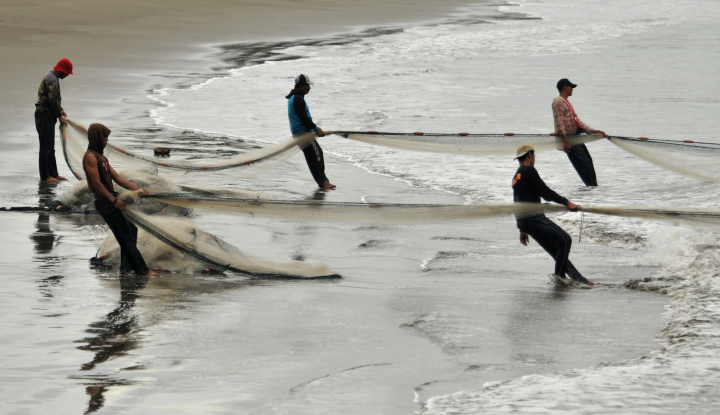
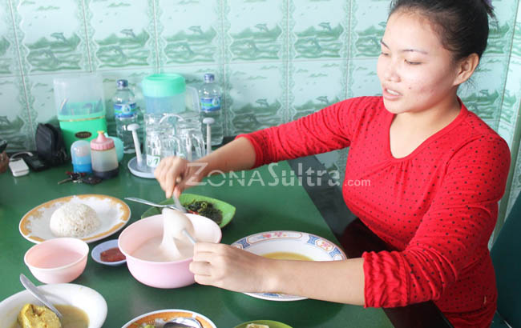
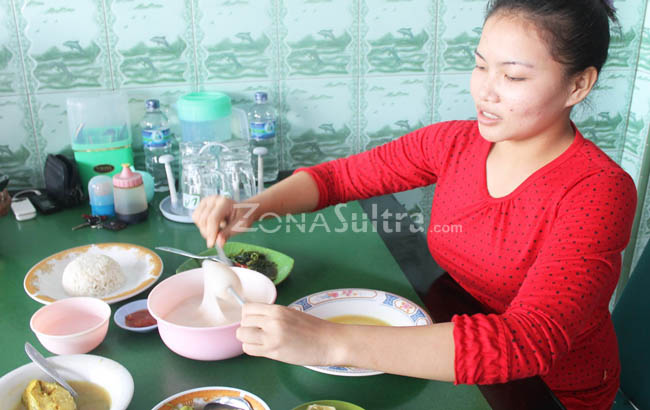

Aktivitas Keseharian Kabupaten Konawe Utara
Kabupaten Konawe Utara adalah sebuah kabupaten di provinsi Sulawesi Tenggara, Ibu kotanya adalah Wanggudu. Kabupaten ini dibentuk berdasarkan Undang-Undang Nomor 13 Tahun 2007 pada tanggal 2 Juli 2007.
Provinsi: Sulawesi Tenggara
Jumlah penduduk: 51.447 (2010)
Ibu kota: Wanggudu
Tanggal peresmian: April 2009
Dasar hukum: UU No. 13 Tahun 2007
Luas: 5.003,39 km2
Berikut gambar-gambar aktivitas keseharian warga Kabupaten konawe Utara



 
